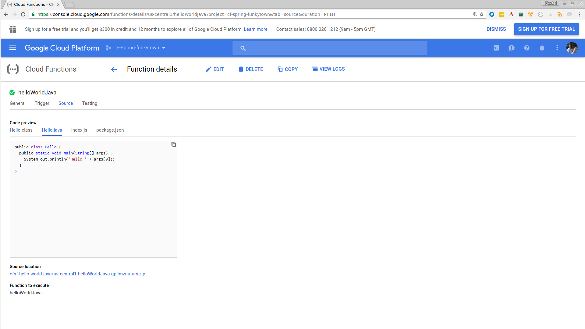
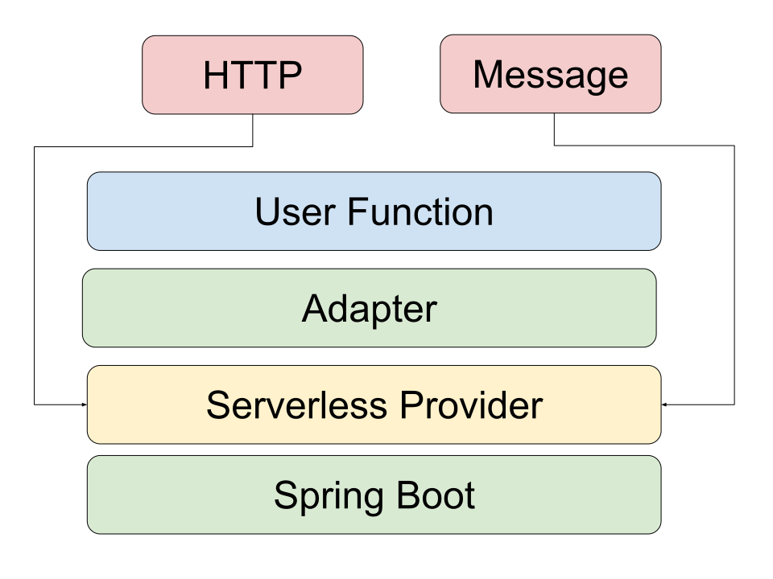

The Road to Serverless: Spring Cloud Function
@david_syer, 2017Agenda
- Cloud abstractions, and serverless
- Spring Cloud Function
- Raising the value line
Cloud Abstractions
Cloud Services

Serverless and Functions
- Event driven
- Dynamic resource utilization
- Billing per message
- Prototypes become production code really quickly
- Focus on business logic
Business Logic and the Value Line
Paraphrasing @adrianco:
Get out of the business of infrastructure and
automation (a.k.a. "undifferentiated heavy lifting")
Business Logic and the Value Line
Get out of the business of infrastructure and
automation (a.k.a. "undifferentiated heavy lifting")
and integration spaghetti
Amazon Lambda

Google Cloud Function

Serverless Providers
- (J) Amazon Lambda
- Google Cloud Functions
- Azure Function
- (J) IBM OpenWhisk
- Fission
- Kubeless
- …
(J) = native Java support
Others can run Java via node JRE launcher.
Java Util Function
public interface Function<T, R> {
R apply(T t);
}
public interface Consumer<T> {
void accept(T t);
}
public interface Supplier<T> {
T get();
}Spring Cloud Function
@SpringBootApplication
public class Application {
@Bean
public Function<String, String> uppercase() {
return value -> value.toUpperCase();
}
public static void main(String[] args) {
SpringApplication.run(Application.class, args);
}
}Spring Cloud Function Web

Spring Cloud Function
All the benefits of serverless, but with full access to Spring (dependency injection, integrations, autoconfiguration) and build tools (testing, continuous delivery, run locally)
For Spring devs: a smaller, more familiar step than using FaaS APIs and UIs natively
For Functionistas: no need to know anything about Spring
Decouple lifecycle of business logic from runtime platform. Run the same code as a web endpoint, a stream processor, or a task
Uniform programming model across serverless providers, and also able to run standalone (locally or in a PaaS)
Project Reactor
public abstract class Flux<T> implements Publisher<T> {
...
}
public abstract class Mono<T> implements Publisher<T> {
...
}Spring Cloud Function
@SpringBootApplication
public class Application {
@Bean
public Function<Flux<String>, Flux<String>> uppercase() {
return flux -> flux
.filter(this::isNotRude)
.map(String::toUpperCase);
}
boolean isNotRude(String word) {
...
}
public static void main(String[] args) {
SpringApplication.run(Application.class, args);
}
}Spring Cloud Function Stream

Spring Cloud Function Adapter

Spring Cloud Function
-
Programming model:
@Beansof typeFunction,ConsumerandSupplier - Component scan for functions (e.g. execute jar with no dependency on Spring at all)
- Compile strings which are Java function bodies
- Deploy app with an isolated classloader (JVM packing)
- Adapters for AWS Lambda, and other "serverless" service providers
Links
- Spring Cloud Function: https://github.com/markfisher/spring-cloud-function
- Spring Boot Thin Launcher: https://github.com/dsyer/spring-boot-thin-launcher
- Fission: http://fission.io/
- Spring Initializr: http://start.spring.io
- Spring Cloud: http://cloud.spring.io
- Reactor: http://projectreactor.io
/